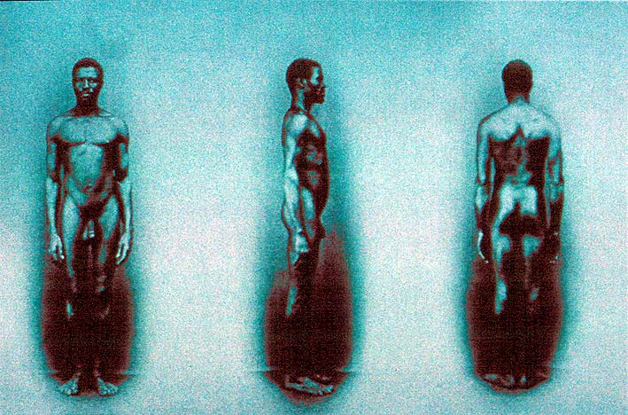

|
|  |
|
Augusto Stahl, Negro de frente, de perfil, e de costas, 1865
|
A prime example of this 'anthropometric' photography is this picture taken by Augusto Stahl in 1865 on request from Louis Agassiz, the Swiss-American zoologist who was travelling through Brazil as a member of a scientific expedition. As part of the research for a book on the comparative study of human races (which he never completed), Agassiz had Stahl take a series of photographs of Afrobrazilians and Chinese immigrants, all of which repeated the standardised front, profile and rear view common to physiological photography of the time. Agassiz also included physiological typologies of the races in his travel book, such as this characterisation of blacks: “of long arms, the Negroes are generally slim; they have long legs and a relatively short torso; the shoulderblades are long and stand close to one another, the back is slightly wrinkled and slender; the hands disproportionably slim, with the interdigital furrows more prolonged than in any other race."
|